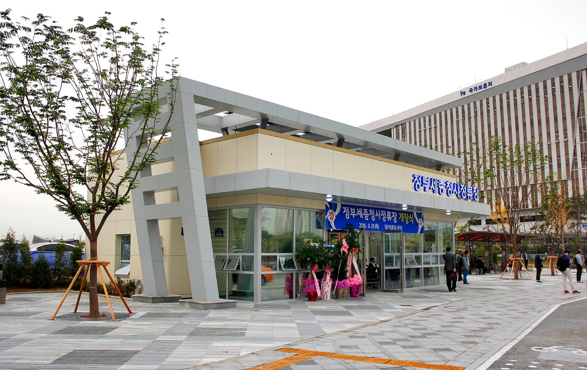
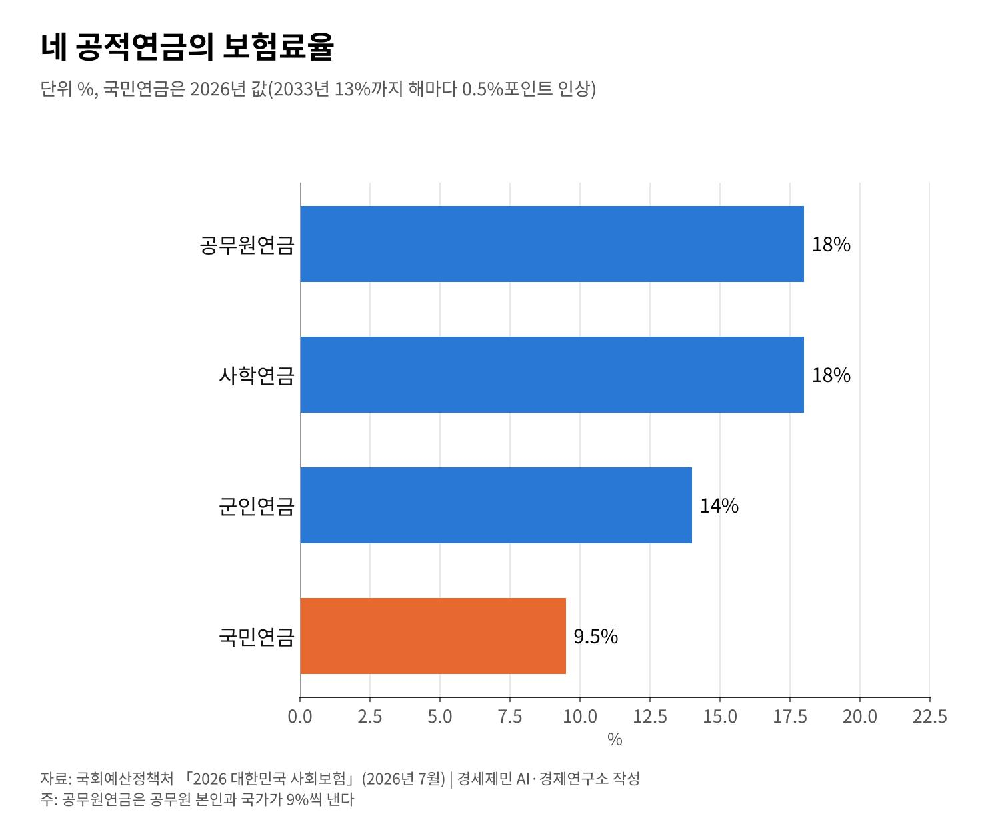

[한국경제 불편한 진실③] 공무원연금 수급자 69만명, 적자는 일반회계가 메운다
공무원연금 국가보전금 2024년 7조4712억원, 2025년 결산 재정수지 8조3000억원 적자
사학연금은 국회예산정책처 전망으로 2028년 적자 전환, 폐교 조기수급자 410명
국민연금 보험료율 2026년 9.5%, 2033년 13%까지 해마다 0.5%포인트씩 오른다
공무원연금은 걷는 보험료로 나가는 연금을 다 대지 못한다. 모자라는 돈은 정부가 일반회계에서 메우는데, 2024년 이 국가보전금은 7조4712억원이었다.
받는 사람도 빠르게 늘어 공무원연금 수급자는 2024년 말 69만2000명으로 역대 가장 많다. 2022년 63만명에서 2년 만에 6만명 넘게 늘었다.
사학연금과 국민연금도 저마다 숙제를 안고 있다. 네 공적연금의 보험료율과 적립금, 재정 전망을 국회예산정책처 자료와 보도로 짚는다.

네 공적연금, 보험료율부터 다르다
한국 공적연금은 국민연금, 공무원연금, 사학연금, 군인연금 넷이다. 국회예산정책처 「2026 대한민국 사회보험」으로 보험료율을 보면 출발점부터 다르다.
공무원연금 보험료율은 18%로 공무원 본인과 국가가 9%씩 낸다. 사학연금도 18%이고 군인연금은 14%다. 국민연금은 2025년까지 9%에 머물러 있었다.
국민연금 보험료율은 2025년 3월 법 개정으로 오르기 시작했다. 2026년 1월 9.5%가 됐고 해마다 0.5%포인트씩 올라 2033년 13%에 이른다.
2026년 1월 공표통계로 국민연금 노령연금 월평균 수령액은 70만427원이다. 직역연금 평균액은 기준 시점과 정의가 서로 달라 한 줄로 견주기 어렵다.

공무원연금 적자, 일반회계가 메운다
공무원연금 국가보전은 2001년 시작됐다. 그해부터 보험료 수입으로 연금 지출을 다 대지 못해서다. 다만 기금이 바닥난 것은 아니다. 2025년 결산 적립금은 18조1000억원이다.
보전금은 해마다 커져 2024년 실적이 7조4712억원에 이르렀다. 국회예산정책처 결산표로 2025년 공무원연금 재정수지는 8조3000억원 적자다.
보전금은 일반회계에서 나가는 돈으로 국민연금 가입자가 낸 보험료와는 다르다. 모든 납세자가 낸 세금이고 공무원 자신도 그 납세자에 든다.
2027년 정부 예산안부터는 군인연금기금이 국방 분야로 옮겨 간다. 분야별 예산으로 직역연금 보전 규모를 해마다 견주던 방식이 이어지기 어려워졌다.
수급자 69만2000명, 개혁보다 빠른 증가
공무원연금 수급자는 2022년 이미 63만명이었다. 2024년 말에는 69만2000명으로 늘어 역대 가장 많다. 퇴직하는 공무원이 늘면서 연금을 받는 사람도 함께 늘었다.
공무원연금은 2009년과 2015년 제도를 고쳤다. 2015년 개혁으로 보험료율은 2020년까지 단계적으로 올라 지금의 18%가 됐다. 내는 돈을 늘리고 받는 돈의 증가를 늦추는 방향이었다.
그래도 보전금이 늘어난 것은 보험료율을 올린 속도보다 수급자가 늘어난 속도가 더 빨랐기 때문이다. 연금 재정은 내는 사람과 받는 사람의 비율에 크게 기댄다.
사학연금, 학령인구 감소가 변수
사학연금은 아직 기금이 넉넉하다. 2025년 결산 적립금은 31조4000억원이고 한 해 재정수지는 8000억원 흑자다. 문제는 앞으로의 흐름이다.
국회예산정책처는 사학연금이 2028년 적자로 돌아서고 2042년 기금이 소진된다고 내다봤다. 정부는 소진 시점을 2048년쯤으로 본다. 국회예산정책처는 2026년부터 운영 적자 약 765억원도 예상했다.
변수는 학령인구로 6~21세 인구는 2025년 697만8000명에서 2040년대 초 410만명으로 줄어든다. 학생이 줄면 학교가 문을 닫고 교직원은 일찍 퇴직한다.
폐교에 따른 조기수급자는 2024년 말 410명으로 30대 2명, 40대 63명, 50대 149명, 60대 이상 196명이다. 젊어서 연금을 받기 시작하면 지급 기간도 길어진다.
가입자 구성도 바뀌었다. 국립대병원 직원이 2016년부터 가입하면서 2024년 병원 직원은 12만6000명, 전체의 39.5%가 됐다. 이들이 수급자로 바뀌는 시점이 다음 고비다.
국민연금 모수개혁 뒤에 남은 과제
국민연금 적립금은 결산 기준 1458조원으로 쌓아 둔 돈은 크지만 언제까지 버틸지는 추계 주체마다 다르다. 가정이 다르면 결과도 달라진다.
정부 장기재정전망은 국민연금이 2048년 적자로 돌아서고 2064년 소진된다고 본다. 국회예산정책처 수정전망은 2050년 적자, 2069년 소진이다. 보건복지부는 수익률 5.5%를 가정하면 2083년 소진으로 본다.
2025년 개정은 보험료율과 같은 숫자를 고친 모수개혁이었다. 인구와 경제 여건에 맞춰 연금액을 자동으로 조정하는 장치는 이번 개정에 포함되지 않았다. 직역연금과의 관계도 따로 논의할 과제로 남았다.
공무원연금 적자는 수급자 증가라는 구조에서 나온다. 2024년 보전금 7조4712억원, 수급자 69만2000명이 그 크기를 보여 준다. 사학연금도 같은 길에 들어설 수 있다.
누가 더 받느냐보다 누가 얼마를 내고 얼마를 받는지가 먼저다. 네 연금의 재정을 같은 시점, 같은 기준의 숫자로 공개하는 일이 논의의 출발점이다.
참고문헌
기관 자료
- 국회예산정책처, 「2026 대한민국 사회보험」, 2026년 7월. https://www.nabo.go.kr/board/file/down.do?fid=33319376
- 국회예산정책처, 「사학연금의 재정전망 및 제도 개선과제」, 2025년 4월. https://www.nabo.go.kr/board/file/bulkDown.do?idx=8691&bid=68
언론 보도
- "공무원연금, 올해 또 8.6조 적자 전망…'국민 혈세' 대거 투입한다", 뉴시스, 2025년 8월 10일. https://www.newsis.com/view/NISX20250810_0003284738
- "공무원연금 月 268만원씩 받는다…국민연금의 5배", 한국경제, 2023년 9월 10일. https://www.hankyung.com/article/2023091071871
- "[단독] 공무원연금 '밑 빠진 독' 커진다… 2065년엔 적자만 23조원 돌파", 서울신문, 2026년 4월 29일. https://www.seoul.co.kr/news/society/2026/04/29/20260429010005
- "국민연금 매달 200만원 이상 수급자 11만명 돌파", 헤럴드경제, 2026년 5월 2일. https://www.heraldk.com/article/2026050222592657376
- "국민연금 월 200만원 받는 노인 11만명 돌파…평균 수급액은 70만원", 쿠키뉴스, 2026년 5월 3일. https://www.kukinews.com/article/view/kuk202605030016
- "코스피 불장에 수익률 대박난 국민연금…기금 고갈 4년 미뤘다", 아시아경제, 2026년 6월 20일. https://view.asiae.co.kr/article/2026061909133399557
- "기금고갈 19년 차이…연금개혁, '낙관적 수익률'에 기대도 될까", 머니투데이방송, 2026년 8월 22일. https://news.mtn.co.kr/news-detail/2026082215092929102
- "사학연금 내년 '운영 적자'…'기금 고갈, 정부 전망보다 빨라'", SBS, 2025년 11월 2일. https://news.sbs.co.kr/news/endPage.do?news_id=N1008315443
- "사학연금 적립금 2042년 소진…폐교로 인한 조기수급 410명", 부산일보, 2025년 4월 2일. https://www.busan.com/view/busan/view.php?code=2025040214202818944
- "2042년 사학연금 적립금 모두 소진…폐교로 조기수급 410명", 헤럴드경제, 2025년 4월 2일. https://biz.heraldcorp.com/article/10455809
- 파이낸셜뉴스, 2027년도 정부 예산안 보도, 2026년 9월 1일. https://www.fnnews.com/news/202609011144383224
- 경북매일, 2027년도 정부 예산안 보도, 2026년 9월 1일. https://www.kbmaeil.com/article/20260901500511
[사진 출처]
- [사진1] Minseong Kim, 「Sejongcheongsa Intercity Bus Station.jpg」, 2016년 9월 30일, 위키미디어 공용, CC0. https://commons.wikimedia.org/wiki/File:Sejongcheongsa_Intercity_Bus_Station.jpg
- [도표1] 경세제민 AI·경제 연구소 작성. 자료 국회예산정책처 「2026 대한민국 사회보험」
© 경세제민 AI·경제 연구소. 인용할 때는 출처를 밝혀 주십시오.